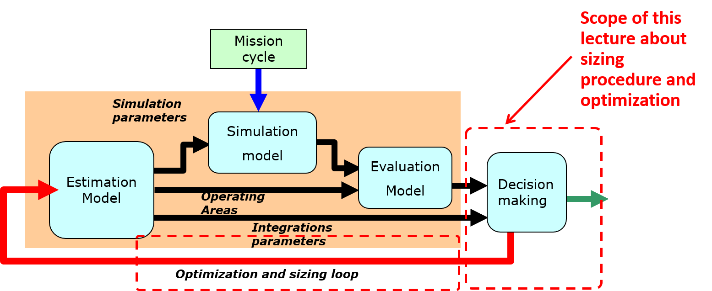
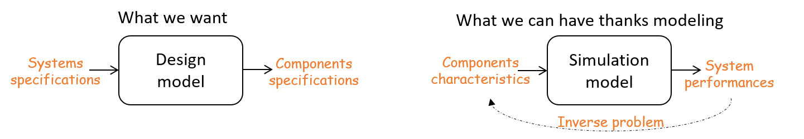
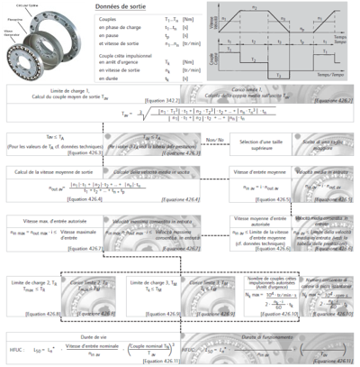
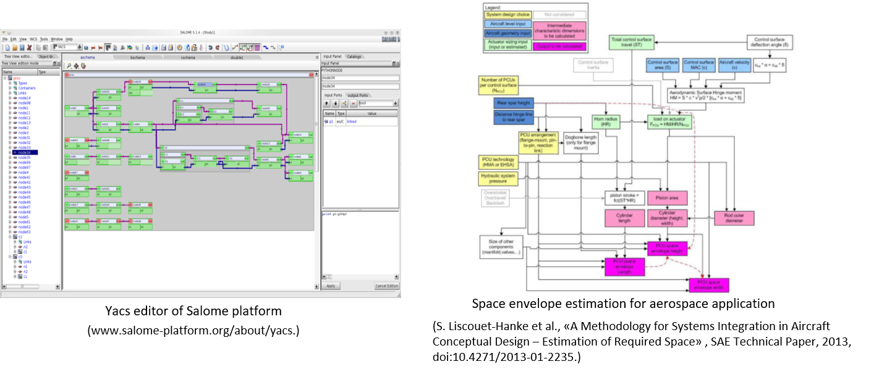
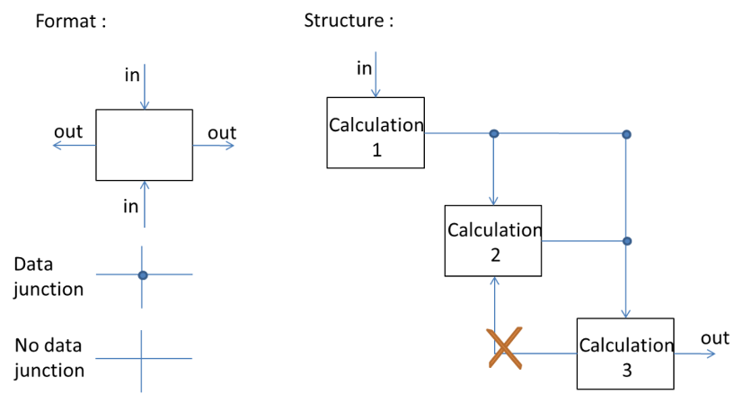
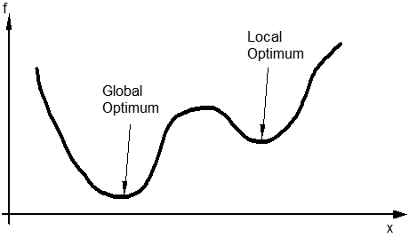
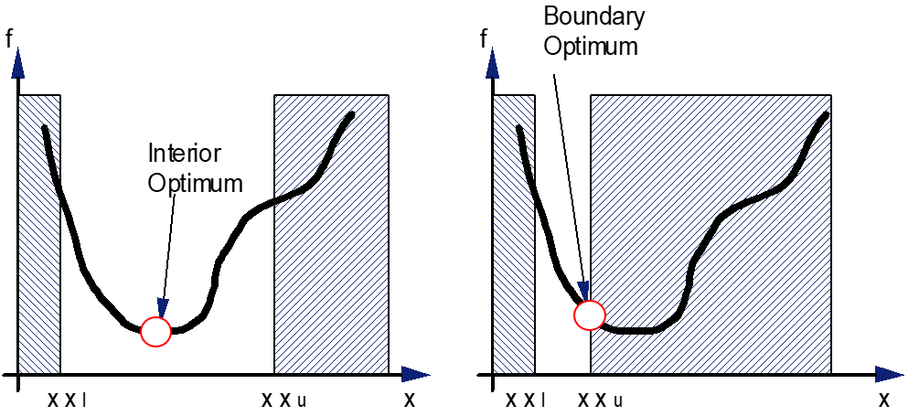

4.1. Representation of a design problem and basics optimal design#
Written by Marc Budinger (INSA Toulouse), Toulouse, France
To date, we have been able to work on :
The establishment of scenarios and mission profiles, enabling us to represent the system’s main design constraints.
Simulation, evaluation and estimation models, enabling us to calculate the usage constraints and main characteristics of our components.
We now need to use this information to select the right components, while optimising our solutions (in terms of mass and dimensions) and complying with a number of constraints (speed, temperature, etc.).

For interested readers, more information can be found in the following document (Chapter 5 – Design graphs for sizing procedures and optimization problems definition):
Budinger, M. (2014). Preliminary design and sizing of actuation systems (HDR dissertation, UPS Toulouse). Link
4.1.1. Preliminary design: an inverse problem#
Preliminary design, is just like any other design problem, an inverse problem. The objective is to select the right components for a determined architecture. The models we use generally allow us to determine the inverse relation, which means the performances of our system (what’s required in the specifications), based on components characteristics (what systems engineers look for).

Description
There are essentially two types of solution to this problem:
Either selection and sizing procedures, which are an intelligent sequence of calculations and tests to determine which components should be chosen. These procedures can also be represented graphically (directed graphs or digraphs) or in the form of N-squared diagrams.

Or optimisation algorithms, which minimise the difference between the performance obtained and the performance required, by modifying the design parameters of the components.
In this section, we show how these two types of solution can be used together.
4.1.2. Sizing procedure representations#
The sizing procedure can be considered as a major part of the whole preliminary sizing process. When the problem is complex, with numerous interactions between components of various fields (mechanical, electrical, etc.), methods for the representation and analysis of such interactions become valuable. We will focus here, on the graphical representation methods.
4.1.2.1. Causal diagram#
The causal diagram is a graphical tool representing the causal relationships between variables. It is, in fact an oriented graph representing a calculation scheme. Figures below give examples of causal diagrams used in the Salome platform for the Pre- and Post-Processing of numerical simulations or for a space envelope estimation.

Description
With a causal diagram, the couplings between the different entities can be difficult to visualize. A major problem is that of algebraic loops, which is well known in industrial processes where Excel spread-sheets bring together component sizing procedures that must not present circular reference errors (i.e. loops) such as y=f(x) and x=g(y). Several solutions are possible:
reject the possibility of such loopbacks in the construction of the causal diagram
solve all the coupled equations (this analytical solution is not always possible even with a symbolic maths package) analytically
solve these equations using a numerical solver.
For the latter, two implementations are possible. In the first, the numerical solver used is internal to the calculation procedure and its computer support. This sizing procedure is difficult to export to other optimization or calculation tools, however.
For the second implementation, the code generated, which corresponds to the sizing procedure, postpones the task of numerical solver to the optimization algorithm. It is then necessary to add design parameters and additional constraints in the optimization problem to manage these algebraic loops. This is the preferred solution in this course.
4.1.2.2. N² diagram#
This diagram is a causal diagram where the graphical entities (blocks) and interactions (arrows) are dictated by an organization convention as shown below.

Description
The N2D formalisms were introduced in the 1970s by the system engineer Robert J. Lano. N is the number of entities considered. The inputs of the blocks are represented by vertical arrows while the outputs must be horizontal arrows. This display provides a quick visual summary of the organization of the system studied. In particular, the couplings and algebraic loops between blocks are easily identifiable, for example when a block “2” provides an input to block “3” and block “3” provides an input to block “2”.
4.1.2.3. Graphs#
A sizing procedure is quite similar to a constraint network where sizing parameters represent variables and equalities/inequalities represent constraints. Therefore, all the tools applied to the representation of constraint networks and so graph theory, can be applied.

Description
Graphics above represent how equations match parameters. Let us take the equation (declarative equation, not imperative assignment) of Figure a, to show these representations:
a. in which case equations (square node) and non-determined parameters (circular node) are represented in a non-oriented graph.
b. matching is generally represented in what is called a bi-partite graph : with all the equation nodes on one side and on all all the non-determined parameter nodes on the other side. A matching parameter/equation is then represented by a double-column.
c. once equations are oriented (one parameter is matched to the equation, i.e. is calculated by the equation), a simplified graph can be drawn with no more equation nodes.
4.1.3. Sizing as an optimization problem#
4.1.3.1. Optimization problem formulation#
An optimization problem can be formulated mathematically as follows:
Minimize an objective function: $\(f(x)\)$
Subject to equality and inequality constraints:
$\(h(x) = 0\)\( \)\(g(x) > 0\)$By action on the variable vector \(x\) in the range
$\(x_{low}<x<x_{up}\)$
where:
the goal is the objective function \(f\);
design alternatives are expressed by a set of values assigned to the design variables \(x\) within a design domain;
constraints (\(h\) & \(g\)) limit the number of alternatives to those satisfying physical principles and design specifications, that is to say feasible design.
The functions (\(f, g, h\)) can be explicit or implicit, algebraic or performed by subroutines that solve systems of differential equations iteratively.
Exercise 4.1
Propose an optimization formulation of a UAV design problem.
Solution to Exercise 4.1
Objective:
$\(\text{Minimise the mass of the entire drone}\)\(
**Design variables**:
\)\(x=[\text{propeller diameter, propeller pitch, motor torque, battery capacity}]\)$
Constraints:
equality: $\(\text{hovering range - 15 min} = 0\)$
inequalities: $\(\text{take-off thrust - k.weight} > 0\)\( \)\(\text{battery voltage - motor voltage} > 0\)$
4.1.3.2. Global and local optimum#
There are many different optimisation algorithms. A gradient algorithm follows the steepest slope of the objective function. It converges rapidly, but may stop at a local optimum rather than a global optimum, as both solutions have a zero gradient. It is possible to run the optimisation algorithm with several starting points (multistart options, in Excel), or to use slower algorithms that are less sensitive to this type of problem, such as genetic algorithms.

Some examples of optimization algorithms in Python
The Scipy package includes several optimization algorithms. In this course we will use in particular:
A gradient type algorithm: Sequential linear-quadratic programming (SLQP) where two subproblems are solved at each step: a linear program (LP) used to determine an active set of constraints, followed by an equality-constrained quadratic program (EQP) used to compute the total step.
A gradient free algorithm: Differential Evolution algorithm is stochastic in nature (does not use gradient methods) to find the minimium, and can search large areas of candidate space, but often requires larger numbers of function evaluations than conventional gradient based techniques. Differential evolution algorithms don’t manage directly constraints functions. A penalty method replaces the previous objective function.
Some examples of optimization algorithms in Excel
Excel includes also several optimization algorithms usefull for sizing:
A gradient type algorithm: the GRG Nonlinear algorithm can stop at a local minimum. However, a multistart can easily be implemented to make the solution less sensitive to the starting point.
A gradient free algorithm: the Evolutionary method uses the genetic algorithm approach to find optimal or near- optimal solutions.
The Solver Add-in is a Microsoft Office Excel add-in program and need to be activate.
4.1.3.3. Interior and boudary optima#
Different types of optimum can appear:
An optimum is interior if all the constraints are inactive.
An optimum that is not interior is a limit optimum.

It is very often the second type of solution that is achieved in an engineering problem. It is therefore important to :
analyse whether this constraint is still active. It is then possible to transform the inequality constraint into an equality and include it in the body of the design code.
observe the technological limit expressed by this constraint and assess whether other design choices would make it possible to improve the performance of the system.
Monotonicity analysis
Monotonicity analysis was suggested by Papalambros and Wilde as a pre-optimization technique to determine if an optimization problem is well-bounded prior to resorting to a numerical optimization task. The technique is based on the following two rules:
Rule 1: If the objective function is monotonic with respect to a variable, then there exists at least one
active constraint which bounds the variable in the direction opposite to the objective. A constraint
is active if it acts at its lower or upper bound.
Rule 2: If a variable is not contained in the objective function then it must be either bounded from
both above and below by active constraints or not actively bounded at all (that is, any constraint
monotonic with respect to that variable must be inactive or irrelevant).
Tips and tricks
Here are a few tips for minimising calculation times during optimisation:
On the optimisation variables
minimise their number
make sure there are enough of them to meet the various constraints
choose variables that can be easily bounded and whose bounds do not depend on a particular case study
On the optimisation objective
if necessary for certain algorithms, normalise it around a value close to 1
On the constraints
minimise the number of constraints, especially equality constraints which can be difficult to respect with certain algorithms (gradient free)
if possible, transform an equality constraint into an inequality constraint (by monotonicity analysis) or include it in the dimensioning code by analytical manipulation
if possible, include inequalities that are still active in the dimensioning code
if necessary for certain algorithms, normalise the various constraints
4.1.3.4. References#
Papalambros, P. Y., & Wilde, D. J. (2000). Principles of optimal design: modeling and computation. Cambridge university press.